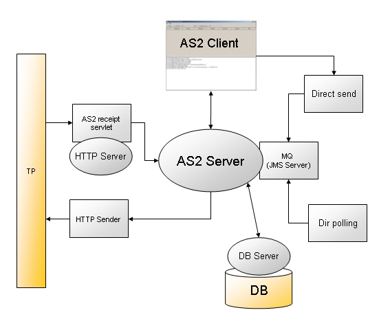

Der AS2 Server besteht aus mehreren Komponenten, die eine Anbindung an die
Partner (TP, trading partner) und das jeweilige Integrationssystem gewährleisten.
AS2 Server:
Der Server regelt den Ablauf der Nachrichtenverarbeitung und ist ausserdem für
Verschlüsselung, digitale Signatur und Zugriffe auf alle anderen Komponenten
verantwortlich.
AS2 Client:
Über den AS2 Client können sämtliche Einstellungen am Server
vorgenommen werden, zusätzlich können Informationen über die
Transaktionen angezeigt werden. Der Client beinhaltet auch die Partnerverwaltung,
die Statistik und die gesamte Zertifikatverwaltung
DB Server:
Der Datenbankserver speichert alle Informationen über die ein- und ausgehenden
Transaktionen. Ausserdem werden die Stammdaten abgelegt.
HTTP Server:
Der HTTP Server dient zum einen als Servlet Container für das Empfangsservlet
für eingehende Nachrichten, zum Anderen zum Hosten einiger Informationsseiten.
Das Servlet empfängt AS2 Nachrichten und asynchron versandte MDN und schickt
sie via RMI (remote method invokation) an den Server. Wenn AS2 Nachrichten mit
synchroner MDN verschickt werden, kommt diese Komponente nicht zum Einsatz.
HTTP Sender:
Ist für den Versand von AS2 Nachrichten und bei synchroner MDN auch für
den Empfang der MDN verantwortlich.
|
Last modified: $Date: 19.01.12 10:52 $ |